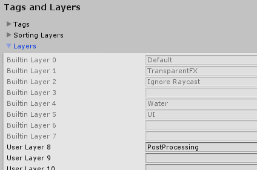
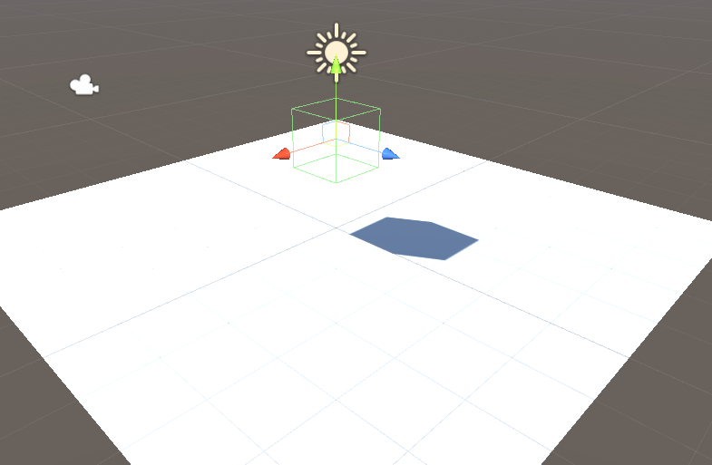
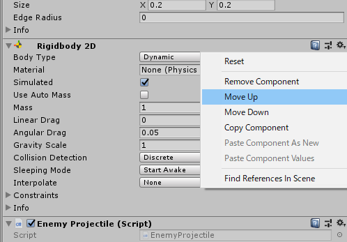

細かいTips
個別の記事を書くほどのことでもない細かいTipsをまとめました。
1. Renderer.isVisible
カメラに映っているときはRenderer.isVisibleがtrueを返しますが、影も含まれます。
そのメッシュ自体がカメラに映っていなくても影がカメラの範囲ならtrueです。
また、シーンビューに映っていてもtrueなので注意が必要です。
2. デフォルトで用意されている空のレイヤー

デフォルトでIgnore RaycastやWaterなどのレイヤーが用意されていますが、空で入力もできないものがいくつかあります。
公式に書いてあるものは見つかりませんでしたが、フォーラムのページでは今後のための予約のレイヤーと書かれていて、納得しました。
3. 影だけ描画する
Mesh RendererのCast ShadowsをShadows Onlyにするとメッシュの描画はせず、影だけ描画できます。

4. エディタ時及び、Developmentビルド時の切り分け
#if UNITY_EDITOR || DEVELOPMENT_BUILD
#endif
5. コンポーネントの位置替え

コンポーネントの位置を変えるのに、歯車メニューからMove Up、Move Downを選ぶと位置を移動できますが、上図でいうRigidbody 2Dと書かれたあたりをドラッグすると自由に移動できます。
(つい最近まで知らなかった……)
6. Git使用時の空フォルダ
空フォルダはgitにコミットされないですが、Unityだと空フォルダに対して.metaファイルが生成されます。
このことがgitで管理し、複数人で作業すると微妙に面倒なことになります。
以下のアセットが空フォルダを一覧できて、消すことができるので便利でした。
https://assetstore.unity.com/packages/tools/utilities/clean-empty-directories-24284
7. 値が割り当てられていないときの警告
メンバをpublicにしたくないので、[SerializeField] 属性つけて定義すると以下の警告が出て煩わしいです。
Field 'xxxx' is never assigned to, and will always have its default value 'yyyyy'
Assets直下にcsc.rspファイルを作り、以下を記述すればこの警告を除外できます。
-nowarn:0649
8. C#のAttribute
一行でも書けます。
[SerializeField] float velocity;
カンマ区切りで複数指定可能。
[RequireComponent(typeof(Rigidbody2D)), RequireComponent(typeof(Timeline))]
public class Something: MonoBehaviour{
9. Visual StudioのRegion
Regionは自動的に閉じられているのですが、他人のコード読んでいるとき閉じられていると見逃すことがあり、個人的にはあまり好きではありません。
以下の拡張で自動的に開くようにしています。
https://marketplace.visualstudio.com/items?itemName=DavidPerfors.RegionExpander&ssr=false
10. C#のテンプレート
Projectビューで右クリックしてCreate > C# Script したときのC#のテンプレートを変更できます。
Assets直下にScriptTemplatesフォルダを作り、中に81-C# Script-NewBehaviourScript.cs.txtを作成します。
以下のように中身は自由に変更し、Unityを一度再起動すれば適用されます。
using System.Collections;
using System.Collections.Generic;
using UnityEngine;
namespace xxxxx {
public class #SCRIPTNAME# : MonoBehaviour {
void Awake() {
}
void Start() {
}
void Update() {
}
}
}
確認バージョン
Unity 2018.4.17f1